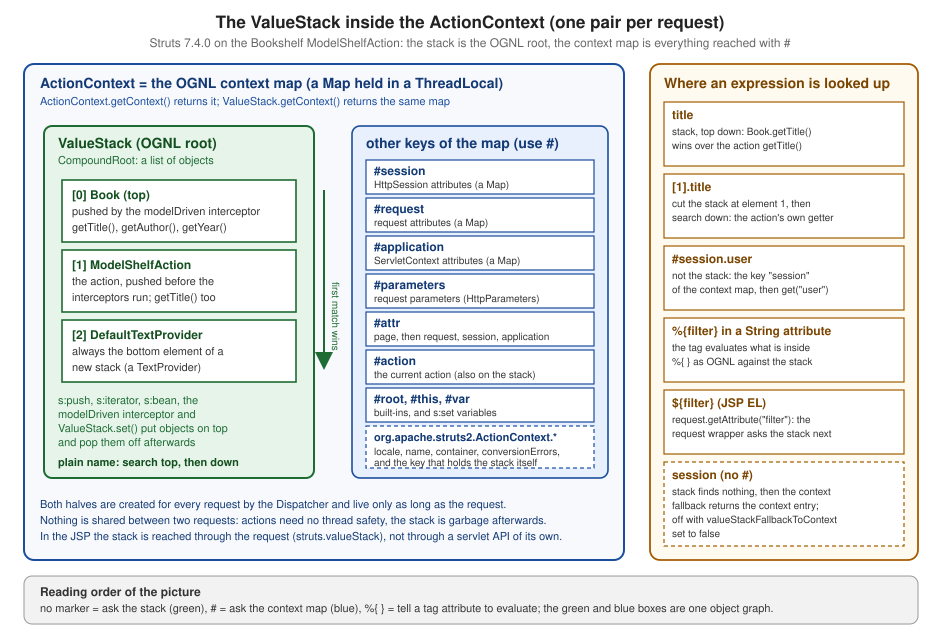

ValueStack, ActionContext & OGNL
|
This content was generated with the assistance of AI and should be verified against the official documentation before being relied on in production. |
This page is written against Apache Struts 7.4.0 (released 2026-10-02) with OGNL 3.4.12, running on Apache Tomcat
11.0.26 and Java 21; the facts were checked on 2026-10-08 against the 7.4.0 sources and default.properties, the Javadoc
of ValueStack and ActionContext and the Tag and Core Developer Guides on https://struts.apache.org/, and every
example was built into a WAR, deployed on Tomcat 11 and requested. Nearly everything an action does for a view happens
through two objects that the framework creates for each request: the ActionContext, a map of everything that belongs
to the request (session, parameters, locale, the servlet objects and more), and the ValueStack, a stack of objects
(the action first of all) that is the root of every OGNL expression. The tags write <s:property value="title"/>, OGNL
looks title up on the stack from the top down, and <s:property value="#session.user"/> leaves the stack and reads
a key of the context map. The running scenario is the Bookshelf, a catalogue of books exposed as Struts actions; this
page uses it to print the stack and the context map, to push objects onto both, to evaluate expressions of every kind
and to watch the 7.x security settings refuse the ones they must refuse. Related pages of this section:
Parameter Injection and @StrutsParameter,
Type Conversion, Tags Overview & Generic Tags,
Security Hardening and Testing.
The Big Picture
Four words are used for what happens when a view needs a value, and they are easy to confuse:
| Term | What it is |
|---|---|
|
|
|
|
OGNL context |
The |
OGNL |
The Object-Graph Navigation Language, a library (OGNL 3.4.12 inside Struts 7.4.0) that evaluates expression strings such as |
The Tag Developer Guide states the relation in one sentence: the framework sets the OGNL context to be the
ActionContext and the ValueStack to be the OGNL root object, and along with the stack it places other objects in the
context (application, session, request, parameters, attr and the current action). Because OGNL treats the root
specially (properties of the root need no marker) and everything else in the context needs a #, the rule for every
expression in a Struts view follows directly: a bare name is looked up on the value stack, a name with a # in front is
looked up in the context map.

The diagram uses the real objects of one request to the example action of this page: the stack holds the model (a
Book, pushed by the modelDriven interceptor), the action and the DefaultTextProvider that every new stack starts
with, and the map holds the session, request, application and parameter views next to the stack. Both halves are created
by the framework for each request (the creation step is part of the request lifecycle described in
Architecture and Request Lifecycle) and discarded
with it; nothing is shared between two requests, which is why an action needs no thread safety of its own.
The names also tell where to look when something fails: a null from title is a stack problem (no getter, wrong
object on top, access refused by the security rules), a null from #session.user is a context-map problem (a
different key, an object put into the wrong scope). The rest of the page follows the same split: the context first, then
the stack, then the language that joins them.
The Bookshelf Used on This Page
All examples below are classes and mappings of one WAR, g9valuestack.war, deployed under the context path
/g9valuestack on Tomcat 11.0.26. It is the Struts Bookshelf of the page Struts Getting Started (the Struts BOM
org.apache.struts:struts2-bom:7.4.0 imported in dependencyManagement, struts2-core, the Servlet and Pages APIs with
scope provided, StrutsPrepareAndExecuteFilter mapped to /*, struts.xml with struts-default) plus the classes
below. Action URLs use the default extension .action, which is optional in 7.4.0 (struts.action.extension defaults to
action,,), so /g9valuestack/shelf and /g9valuestack/shelf.action are the same request. Imports and package
lines are left out of the listings; the packages are org.example.bookshelf and org.example.bookshelf.model.
| Class | Mapping | Concept |
|---|---|---|
|
|
A plain action with a |
|
|
A |
|
|
The |
|
(model classes) |
|
A probe action |
|
Scratch only: it evaluates a request parameter as OGNL so that the security outcomes could be observed. Evaluating request input as an expression is exactly the vulnerability this page warns about; the action existed only on a throw-away Tomcat and must never be written in an application |
The only non-default setting of the app is the allowlist constant for the model package; the reason is explained in the security section below.
<struts>
<constant name="struts.allowlist.packageNames" value="org.example.bookshelf.model"/>
<package name="default" extends="struts-default" namespace="/">
<action name="shelf" class="org.example.bookshelf.ShelfAction">
<result>/WEB-INF/views/shelf.jsp</result>
</action>
<action name="model" class="org.example.bookshelf.ModelShelfAction">
<result>/WEB-INF/views/model.jsp</result>
</action>
</package>
</struts>public class Book {
private final String title;
private final String author;
private final int year;
public Book(String title, String author, int year) {
this.title = title;
this.author = author;
this.year = year;
}
public String getTitle() { return title; }
public String getAuthor() { return author; }
public int getYear() { return year; }
public String getLabel() { return title + " (" + year + ")"; }
}ActionContext
What It Is
The Javadoc of ActionContext calls it the context in which an action is executed: each context is a container of the
objects an action needs for execution, like the session, parameters and locale. It is thread local, which means that the
values stored in it are unique per thread; the benefit stated by the Javadoc is that nobody has to worry about a user
specific action context and nobody has to make actions thread safe. ActionContext.getContext() returns the context
bound to the current thread, and getContextMap() returns the underlying map, which is the same map that OGNL sees as
its context.
What It Holds
The 7.4.0 class exposes the request state through typed getters and fluent with... setters (the setters return the
context, so they chain). The table lists the getters and the OGNL name or map key behind each one.
| Getter | Returns | OGNL name or key |
|---|---|---|
|
The session attributes as a |
|
|
The |
|
|
|
|
|
The |
key |
|
The name of the action being executed |
key |
|
The |
key |
|
The |
key |
|
The |
key |
|
The internal dependency-injection container and a bean from it |
key |
|
Type conversion errors collected for the request |
key |
|
The Jakarta servlet objects (the page context only while a JSP renders) |
keys |
|
Any other entry of the map |
the entry’s own key |
Source: Struts Javadoc — ActionContext
The key names in the last column were read from ActionContext.getContext().getContextMap().keySet() printed by the
shelf action on Tomcat 11.0.26 (see the next listing). They are the 7.x names: before the repackaging of 7.0 the same
keys started with com.opensymphony.xwork2.ActionContext, and code that still asks for such a key gets null.
public class ShelfAction extends ActionSupport {
public String getContextKeys() {
return new TreeSet<>(ActionContext.getContext().getContextMap().keySet()).toString();
}
}With <s:property value="contextKeys"/> in the JSP, the response of the shelf action contained (line breaks added):
[__component_stack, __requestWrapper.getAttribute, action, application, attr, current.property.path,
last.bean.accessed, last.property.accessed,
org.apache.struts2.ActionContext.actionInvocation, org.apache.struts2.ActionContext.application,
org.apache.struts2.ActionContext.container, org.apache.struts2.ActionContext.conversionErrors,
org.apache.struts2.ActionContext.locale, org.apache.struts2.ActionContext.name,
org.apache.struts2.ActionContext.parameters, org.apache.struts2.ActionContext.session,
org.apache.struts2.dispatcher.HttpServletRequest, org.apache.struts2.dispatcher.HttpServletResponse,
org.apache.struts2.dispatcher.PageContext, org.apache.struts2.dispatcher.ServletContext,
org.apache.struts2.util.ValueStack.ValueStack, parameters, report.conversion.errors, request, session,
struts.actionMapping, xwork.MethodAccessor.denyMethodExecution, xwork.NullHandler.createNullObjects]Two groups of keys appear. The short ones (action, application, attr, parameters, request, session) are the
names the views use with a #; they are the "Struts named objects" of the OGNL Basics page. The long dotted ones are the
typed state behind the getters, and a few bookkeeping entries (current.property.path, last.bean.accessed,
report.conversion.errors, __component_stack, __requestWrapper.getAttribute) belong to OGNL, to type conversion and
to the tags. The two xwork. entries show that parts of the internal naming were not renamed in the 7.0 repackaging.
Application code should use the typed getters and treat the dotted keys as internal.
Reaching the Scopes From an Action
Three ways exist to read or write the session, request and application from Java, and the Core Developer Guide ranks
them (the servlet-level objects behind these maps are described in
Servlet Fundamentals, Sessions, and the action classes that receive them in
Actions). The recommended one is the Aware interfaces of org.apache.struts2.action: the framework, through the
servletConfig interceptor of defaultStack, calls the single method of each interface that an action implements, and
the action stores what it is given. The guide says that using ActionContext directly for this is a bad practice and
should be avoided, with the *Aware interfaces as the alternative; ServletActionContext (static helpers for the request,
response, servlet context, page context, action mapping and the stack of a request) is the third way and ties the action
to the servlet API in the same way as ServletRequestAware.
| Mechanism | Method the framework calls or you call | Gives |
|---|---|---|
|
|
the same map as |
|
|
the application map, |
|
|
the Jakarta request; ties the action to the Servlet API |
|
|
the request parameters, |
|
|
the response, the servlet context, the cookies and the principal |
|
static, thread local |
the context map and everything in the table above; |
|
static: |
the servlet objects of the current request |
The Aware interfaces were renamed in 6.0 (setSession became withSession, setServletRequest became
withServletRequest) and moved from org.apache.struts2.interceptor to org.apache.struts2.action; code written for
the older names does not compile on 7.x.
public class AwareAction extends ActionSupport
implements SessionAware, ApplicationAware, ServletRequestAware {
private Map<String, Object> session;
private Map<String, Object> application;
private HttpServletRequest request;
private String report;
@Override public void withSession(Map<String, Object> session) { this.session = session; }
@Override public void withApplication(Map<String, Object> application) { this.application = application; }
@Override public void withServletRequest(HttpServletRequest request) { this.request = request; }
@Override
public String execute() {
session.put("lastShelf", "scifi");
application.put("shelfCount", 3);
request.setAttribute("requestId", 7);
report = "session=" + session.get("lastShelf") + " application=" + application.get("shelfCount")
+ " request=" + request.getAttribute("requestId")
+ " sameMapAsContext=" + (session == ActionContext.getContext().getSession());
return SUCCESS;
}
public String getReport() { return report; }
}The view reads the same data back with the # names. The aware.jsp page and its response on Tomcat 11.0.26:
<%@ taglib prefix="s" uri="/struts-tags" %>
W1 report=<s:property value="report"/>
W3 #session.seenBanner=<s:property value="#session.seenBanner"/>
W4 #application.shelfCount=<s:property value="#application.shelfCount"/>
W5 #request.requestId=<s:property value="#request.requestId"/> | #attr.lastShelf=<s:property value="#attr.lastShelf"/>
W6 EL: ${banner}|${sessionScope.lastShelf}|${applicationScope.shelfCount}|${requestId}Source: Core Developer Guide — Accessing application, session, request objects, Accessing from the view
W1 report=session=scifi application=3 request=7 sameMapAsContext=true
W3 #session.seenBanner=true
W4 #application.shelfCount=3
W5 #request.requestId=7 | #attr.lastShelf=scifi
W6 EL: Bookshelf open|scifi|3|7sameMapAsContext=true shows that the map handed to withSession is the very map the context holds and the view
reads, so a write through any of the routes is visible through all of them. The values banner and seenBanner come from
the interceptor of the next section, and ${banner} in W6 is JSP EL reading an object of the value stack; how that works
is explained in the section on EL beside OGNL.
ActionContext Outside a Request
The 7.4.0 API creates and binds a context with static factories, which is what makes unit tests without a servlet
container possible: ActionContext.of(map) (or of()) creates a context around a map, the with... methods fill it,
bind() attaches it to the current thread and clear() removes it.
Map<String, Object> session = new HashMap<>();
session.put("user", "alice");
System.out.println("before bind: " + ActionContext.getContext());
ActionContext.of(new HashMap<>()).withSession(session).withLocale(Locale.FRANCE).bind();
System.out.println(ActionContext.getContext().getSession() + " " + ActionContext.getContext().getLocale());
Thread other = new Thread(() -> System.out.println("other thread: " + ActionContext.getContext()));
other.start();
other.join();
ActionContext.clear();
System.out.println("after clear: " + ActionContext.getContext());Compiled and run with the WAR’s libraries on Java 21, the program printed:
before bind: null
{user=alice} fr_FR
other thread: null
after clear: nullThe third line is the practical consequence of the thread-local design: a thread that the container did not dispatch the
request to (a task submitted to an executor, a CompletableFuture, a servlet async callback) sees null from
ActionContext.getContext(). Code that has to run there must receive the data it needs as arguments, or capture the
values before leaving the request thread.
ValueStack
What Is on the Stack and When
The interceptors that fill the stack (modelDriven, params, servletConfig) are described on Interceptors. The Javadoc describes the value stack as a structure that allows multiple beans to be pushed in and dynamic expressions to
be evaluated against it; when an expression is evaluated, the stack is searched from the latest object pushed in to the
earliest, looking for a bean with a getter or setter for the given property, or a method of the given name. Four things
put objects on it during a request:
| Who | What is pushed and when |
|---|---|
The framework, when it creates the stack |
A |
|
The action instance |
The |
The object returned by |
Tags and your own code |
|
Source: Struts Javadoc — ValueStack
Seeing the Stack
The root of the stack is a CompoundRoot, a list that ValueStack.getRoot() returns, so printing its elements shows what a
view can reach. This action property lists the class of every element from the top; it is used by all the stack
experiments below.
public String getStackReport() {
ValueStack stack = ActionContext.getContext().getValueStack();
StringBuilder sb = new StringBuilder("size=").append(stack.size());
for (int i = 0; i < stack.getRoot().size(); i++) {
sb.append("\n[").append(i).append("] ").append(stack.getRoot().get(i).getClass().getName());
}
return sb.toString();
}In shelf.jsp, <s:property value="stackReport"/> printed the stack of a plain action, and the same property inside
<s:push value="books[1]"> printed the stack with a Book pushed on top:
A24 stackReport=size=2
[0] org.example.bookshelf.ShelfAction
[1] org.apache.struts2.text.DefaultTextProvider
A26 push:Neuromancer|sci|Neuromancer (1984)|sci|size=3
[0] org.example.bookshelf.model.Book
[1] org.example.bookshelf.ShelfAction
[2] org.apache.struts2.text.DefaultTextProviderSource: Tag Developer Guide — push
The line A26 prints, inside the s:push body, title (the Book), filter (not a Book property, so the search
continues down to the action), [0].top.label (the top of the stack, a Book) and [1].top.filter (the top of the
stack cut at element 1, the action). Outside the body the stack is again the two original elements: s:push
pops what it pushed.
The ValueStack API
| Member | Role |
|---|---|
|
The stack operations; |
|
The list behind the stack, index 0 being the top |
|
The OGNL context map and the context that wraps it |
|
Puts |
|
Evaluates the expression against the stack; the |
|
The same, converted to a |
|
Sets the property that the expression names; |
|
A default type to convert to when no type is given, and an override map whose entries take precedence in find operations |
|
Constants: the context key of the stack and the flag for "report property errors" |
The members were listed from the 7.4.0 class with javap and match the Javadoc. Two details of OgnlValueStack matter in
practice. A failed lookup is swallowed: findValue logs and returns null instead of throwing, unless the caller asked
for exceptions (struts.devMode and struts.ognl.logMissingProperties control how loudly). And when the stack lookup
returns null or fails, the implementation tries the context map under the same name, which is the "fallback to context"
discussed in the OGNL and security sections.
public String getProgrammatic() {
ValueStack stack = ActionContext.getContext().getValueStack();
Map<String, Object> ctxMap = stack.getContext();
return "findValue(filter)=" + stack.findValue("filter")
+ "; findValue(books.size())=" + stack.findValue("books.size()")
+ "; findString(books[0].label)=" + stack.findString("books[0].label")
+ "; findValue(#session.user)=" + stack.findValue("#session.user")
+ "; ctx.getActionName()=" + ActionContext.getContext().getActionName();
}With the request /g9valuestack/shelf?filter=sci the property printed (line A25):
findValue(filter)=sci; findValue(books.size())=null; findString(books[0].label)=Dune (1965); findValue(#session.user)=alice; ctx.getActionName()=shelfThree observations come out of that line. The filter property was set from the request by the params interceptor, so it
is visible on the stack. books.size() returned null on Tomcat 11.0.26 with the 7.x defaults: the OGNL allowlist
refuses a method whose declaring class (java.util.AbstractCollection) is not allowlisted, and the property form
books.size works (see the security section). And an old key lookup would fail silently:
a variant of this method that asked the context for com.opensymphony.xwork2.ActionContext.name, the key of the
2.x documentation and of the books, returned null, while the typed getter returned shelf.
An Interceptor That Writes to the Stack
An interceptor reaches both objects through the ActionInvocation: getStack() for the stack and
getInvocationContext() for the ActionContext. This one puts a banner text on the stack and a flag in the session before
the action runs.
public class BannerInterceptor extends AbstractInterceptor {
@Override
public String intercept(ActionInvocation invocation) throws Exception {
invocation.getStack().set("banner", "Bookshelf open");
invocation.getInvocationContext().getSession().put("seenBanner", Boolean.TRUE);
return invocation.invoke();
}
}<interceptors>
<interceptor name="banner" class="org.example.bookshelf.BannerInterceptor"/>
<interceptor-stack name="bannerStack">
<interceptor-ref name="banner"/>
<interceptor-ref name="defaultStack"/>
</interceptor-stack>
</interceptors>
<action name="aware" class="org.example.bookshelf.AwareAction">
<interceptor-ref name="bannerStack"/>
<result>/WEB-INF/views/aware.jsp</result>
</action>The earlier aware.jsp output already showed the results (banner=Bookshelf open, #session.seenBanner=true). With
<s:property value="stackReport"/> added to the JSP, the stack at render time was:
W2 banner=Bookshelf open
W7 stack=HashMap AwareAction DefaultTextProviderThe HashMap on top is the map that set("banner", ...) pushed, found by the plain name banner like a property of any
other element. Writing interceptors in general is the subject of Custom Interceptors
(the stack that contains this one is on Interceptors); the point
here is that an interceptor puts values where the view can reach them without the action knowing.
A Model on Top of the Action
A ModelDriven action exposes one object, the model, that the modelDriven interceptor pushes on top of the action. The
form fields and the view then address the model’s properties directly, and the action’s own properties stay reachable
below.
public class ModelShelfAction extends ActionSupport implements ModelDriven<Book> {
private final Book book = new Book("Dune", "Frank Herbert", 1965);
@Override public Book getModel() { return book; }
public String getTitle() { return "ACTION-title"; }
public String getStackReport() {
StringBuilder sb = new StringBuilder();
for (Object o : ActionContext.getContext().getValueStack().getRoot()) {
sb.append(o.getClass().getSimpleName()).append(' ');
}
return sb.toString();
}
}<%@ taglib prefix="s" uri="/struts-tags" %>
M1 title=<s:property value="title"/>
M2 [0].title=<s:property value="[0].title"/>
M3 [1].title=<s:property value="[1].title"/>
M4 author=<s:property value="author"/>
M5 stack=<s:property value="stackReport"/>
M6 top.title=<s:property value="top.title"/>
M7 #action.title=<s:property value="#action.title"/>M1 title=Dune
M2 [0].title=Dune
M3 [1].title=ACTION-title
M4 author=Frank Herbert
M5 stack=Book ModelShelfAction DefaultTextProvider
M6 top.title=Dune
M7 #action.title=ACTION-titleBoth objects have a title, and the plain title returns the model’s because the model is on top (M1). [1].title
cuts the stack at element 1 and finds the action’s getter (M3), and #action.title reaches the action directly through
the context map whatever the stack looks like (M7). author exists only on the model and is found without any marker
(M4). The tie between names is the rule of the next section.
How a Plain Name Is Resolved
The OGNL Basics page explains why Struts needs more than plain OGNL. Standard OGNL has exactly one root, so a name that is
not a property of the root needs a # prefix. Struts wants many "roots", so the whole stack is the root and a special
property accessor looks at the entries from the top down until it finds an object that has the property. With an Animal
on top of a Person the docs show that species reads the animal, salary reads the person and name reads the
animal’s (the top wins a tie). To reach the lower one, XWork added indexes on the stack.
| Expression | Meaning |
|---|---|
|
Search the stack from the top; the first element with a |
|
Cut the stack from element 0 (the whole stack) and search it: here the same as |
|
Cut the stack from element 1 (everything below the top) and search it |
|
The top element of the stack, the same as |
|
The top element of the stack cut at 1: the second element of the whole stack |
|
The property |
On the plain shelf action the lines A20 to A22 printed [0].top.filter=sci, [1].top as the string form of
org.apache.struts2.text.DefaultTextProvider and top.filter=sci, confirming that the cut [1] starts below the
action. When no object has the name, two things can happen: the search ends with null, or, if the lookup fails or yields
null, the stack falls back to the context map under the same name. On the probe action, the bare name session returned
the session map {user=alice} and the bare names action and struts.actionMapping returned the action and the mapping,
all of them context entries read without a #; with struts.ognl.valueStackFallbackToContext set to false the bare
session returned null while #session.user still returned alice. The fallback is convenient and unintended in most
code, and the security section lists it among the settings to switch off.
OGNL
What It Is and What Struts Adds
OGNL, the Object-Graph Navigation Language, is an expression language for getting and setting properties of Java objects.
It is a separate open source library (the project lives at https://github.com/orphan-oss/ognl, and Struts 7.4.0 pins
version 3.4.12); Struts uses it in four places that you meet daily: the tags (value, test, list and %{...}
attributes), the params interceptor (a request parameter name such as book.title is an OGNL expression that is
set on the stack), the validators and the result configuration (${...} in a result parameter is OGNL as well, see Results and Result Types). The
Tag Developer Guide gives the minimum the framework adds to plain OGNL, and everything in this section is built on it:
-
the value stack is the root object, and a property lookup searches the stack from the top (see the previous section);
-
the
ActionContextmap is the OGNL context, so#namereads a key of it; -
a handful of named objects (
#action,#parameters,#request,#session,#application,#attr) are placed in the context; -
tag attributes may contain
%{...}to force evaluation (the next two sections).
The OGNL language itself (operators, literals, projection, selection, lambdas, instanceof, new, the @class@member
static syntax) is documented by the OGNL project in its Language Guide; this page covers what Struts 7.4.0 lets through.
The Named Objects
Struts places the request parameters and the request, session and application attributes in the context. The OGNL Basics
page lists them; the right column shows what each one printed on the shelf action after it had put user in the
session and requestId in the request, called as /g9valuestack/shelf?filter=sci:
| Expression | Reads | Printed (lines A1 to A9) |
|---|---|---|
|
The |
|
|
A getter of the current action, through the context key |
|
|
The session attribute |
|
|
The request attribute |
|
|
The request parameter |
|
|
|
|
|
A method on the application map (A9) |
empty: the allowlist refuses |
The Core Developer Guide adds the precision about scopes for #attr: it looks first in the page scope (when a
PageContext exists), then request, session and application, and the first match wins. Writing just # followed by a name
that is not one of the named objects reads a variable of the OGNL context, which is how the variables created by s:set,
s:iterator var and s:bean var are reached (examples below).
<%@ taglib prefix="s" uri="/struts-tags" %>
A1 filter=<s:property value="filter"/>
A2 #session.user=<s:property value="#session.user"/>
A3 #session['user']=<s:property value="#session['user']"/>
A4 #request.requestId=<s:property value="#request.requestId"/>
A5 #parameters.filter=<s:property value="#parameters.filter"/>
A6 #parameters.filter[0]=<s:property value="#parameters.filter[0]"/>
A7 #attr.user=<s:property value="#attr.user"/>
A8 #action.filter=<s:property value="#action.filter"/>The page shelf.jsp of the example WAR printed A1 filter=sci, A2 #session.user=alice and so on, exactly the values of
the table. The tag s:property writes the result of the expression into the page, HTML-escaped by default (its
escapeHtml attribute defaults to true); escapeJavaScript, escapeCsv and escapeXml are the other escapers, and
default supplies a text when the value is null.
Expression Forms
The following table collects the expression forms of the OGNL pages of the Struts guides, run against the Bookshelf, with
the output observed on Tomcat 11.0.26. Rows marked "JSP" were printed by s:property in shelf.jsp or more.jsp; rows
marked "probe" were evaluated by the scratch probe action. The books are Dune (1965), Neuromancer (1984) and Hyperion
(1989).
| Expression | Meaning | Observed |
|---|---|---|
|
Index into a list, then a property (JSP A10) |
|
|
The |
|
|
Projection: the property of every element, as a list (JSP A12) |
|
|
Selection with |
|
|
Selection with |
|
|
Selection with |
|
|
A list literal (JSP A16) |
|
|
A map literal, written with a |
|
|
Key lookup in a map literal (probe) |
|
|
Membership test (JSP A18) |
|
|
Negated membership test (JSP B26 inside |
|
|
An element of a list, and an element of a projected list (JSP B17) |
|
|
Arithmetic on property values (probe) |
|
|
Comparison and the conditional operator (probe) |
|
|
Equality, symbolic and word form (probe) |
|
|
String concatenation with |
|
|
Instance method calls on a |
|
|
Instance method calls on a collection (JSP A35, probe) |
empty or |
|
Static field access (JSP A30) |
empty with the 7.4.0 defaults; |
|
Static method call (JSP A31) |
always empty on 7.4.0: static methods are blocked |
|
A chained expression with a variable (probe) |
|
The JSP behind the first rows of the table, with the output that Tomcat returned:
A10 books[0].title=<s:property value="books[0].title"/>
A11 books.size=<s:property value="books.size"/>
A12 books.{title}=<s:property value="books.{title}"/>
A13 selection ?: <s:property value="books.{? #this.year > 1970}.{title}"/>
A14 selection ^: <s:property value="books.{^ #this.year > 1970}.{title}"/>
A15 selection $: <s:property value="books.{$ #this.year > 1970}.{title}"/>
A16 {1,2,3}=<s:property value="{1,2,3}"/>
A17 map literal=<s:property value="#{'a':1,'b':2}"/>
A18 'foo' in {'foo','bar'}=<s:property value="'foo' in {'foo','bar'}"/>A10 books[0].title=Dune
A11 books.size=3
A12 books.{title}=[Dune, Neuromancer, Hyperion]
A13 selection ?: [Neuromancer, Hyperion]
A14 selection ^: [Neuromancer]
A15 selection $: [Hyperion]
A16 {1,2,3}=[1, 2, 3]
A17 map literal={a=1, b=2}
A18 'foo' in {'foo','bar'}=trueInside a selection or projection #this is the element being examined. The result of a selection with ?, ^ or $
is always a list, even for ^ and $, so printing it shows brackets and a following projection (.{title}) is
usually needed to show something readable. The guides also show the same forms in the control tags, where they are most
useful: a list literal as the options of a select, a map literal as value and label pairs, in and not in in an s:if,
and selection or projection as the value of an s:iterator.
<s:select label="Shelf" name="shelf" list="{'scifi','classics'}" value="%{'scifi'}"/>
<s:select label="Format" name="format" list="#{'pb':'Paperback','hb':'Hardback'}"/>
<s:iterator value="books.{? #this.year > 1970}" var="b">
<li><s:property value="#b.label"/></li>
</s:iterator>The rendered result (whitespace trimmed) was two select elements and two list items:
<select name="shelf" id="shelf">
<option value="scifi" selected="selected">scifi</option>
<option value="classics">classics</option>
</select>
<select name="format" id="format">
<option value="pb">Paperback</option>
<option value="hb">Hardback</option>
</select>
<li>Neuromancer (1984)</li>
<li>Hyperion (1989)</li>Variables: s:set, s:iterator, s:bean and #this
Several tags create named values that later expressions reach with #. The lines B1, B7 and B21 of more.jsp exercise
them; the output shows, in particular, where each variable ends up.
B1 iterator:<s:iterator value="books" var="b" status="st">[<s:property value="#st.index"/>:<s:property value="title"/>|<s:property value="#b.year"/>]</s:iterator>
B2 after iterator var b=<s:property value="#b"/>
B7 bean: <s:bean name="org.example.bookshelf.model.Reader" var="rd"><s:param name="name" value="'Ann'"/><s:property value="name"/></s:bean>|<s:property value="#rd.name"/>
B21 set scopes: <s:set var="v1" value="'a'"/><s:set var="v2" value="'b'" scope="request"/><s:set var="v3" value="'c'" scope="session"/><s:set var="v4" value="'d'" scope="application"/><s:set var="v5" value="'e'" scope="page"/>ctx:<s:property value="#v1"/><s:property value="#v2"/><s:property value="#v3"/><s:property value="#v4"/><s:property value="#v5"/> req:<s:property value="#request.v1"/><s:property value="#request.v2"/> sess:<s:property value="#session.v3"/> app:<s:property value="#application.v4"/> EL:${v1}${v2}${v3}${v4}${v5}Source: Tag Developer Guide — set
B1 iterator:[0:Dune|1965][1:Neuromancer|1984][2:Hyperion|1989]
B2 after iterator var b=org.example.bookshelf.model.Book@43c4a610
B7 bean: Ann|Ann
B21 set scopes: ctx:a req:ab sess:c app:d EL:abcdeSource: Tag Developer Guide — iterator
Source: Tag Developer Guide — bean
The lessons, all observed:
-
s:iteratorpushes each element on the stack for the length of its body (sotitleis the element’s) and, withvarandstatus, also exposes the element (#b) and anIteratorStatus(#st.index,#st.count,#st.first,#st.last,#st.odd; the line B24 printed1truefalsetrue 2falsefalsefalse 3falsetruetruefor count, first, last and odd). The variable#bstill resolved after the loop, to the last element (B2), so a variable name is not scoped to the tag body. -
s:beaninstantiates the class through the framework’s object factory, which needs a no-argument constructor (aBookwith a four-argument constructor produced "Could not instantiate bean … Could not find a suitable constructor" in the log and broke the rest of the page), pushes the bean for its body and stores it undervar. -
s:setwithout a scope stores the value in the OGNL context (#v1) and also in the request attributes (#request.v1and${v1}both saw it). Withscope="request","session","application"or"page"the value goes only to that scope:#v2to#v5printed nothing in the context, while#request.v2,#session.v3,#application.v4and${v5}found them. The tag is therefore also the bridge to JSP EL and to third-party tag libraries, as the next section shows.
A Value Stack Inside a Tag Body
The tag s:push makes an object the top of the stack for its body, which lets a block of markup use short names. The line
B23 combined it with the stack index: outside the tag books.size was 3; inside <s:push value="books[2]"> the
expression [0].top.title printed Hyperion; after the tag the stack was the original again.
<s:push value="books[2]">
<p><s:property value="title"/> by <s:property value="author"/></p>
</s:push>Source: Tag Developer Guide — push
The block rendered <p>Hyperion by Dan Simmons</p>.
OGNL and JSP EL in the Same Page
A Struts JSP has two expression languages side by side, evaluated by different engines at different moments, and keeping them apart is the first skill of Struts view code.
| Aspect | OGNL (Struts tags) | JSP EL (${...}) |
|---|---|---|
Evaluated by |
The Struts tag at request time, against the value stack and the context map |
The JSP container (Jasper), against the page, request, session and application scopes |
Where it is written |
In tag attributes ( |
In template text and in the attributes of tags that accept runtime expressions |
Root |
The value stack (properties without a marker); context entries with |
The scopes; |
Output escaping |
|
None: the text appears as it is, a cross-site scripting risk for request data |
Static calls, lambdas |
Static fields only with a setting and the allowlist, static methods never |
Governed by the EL specification (static access, lambdas, collection operations), see Expression Language Basics |
Expressions in Tag Attributes: the Three Rules
The Tag Syntax page reduces the way Struts evaluates attributes to three rules: every attribute whose Java type is String
is parsed for the %{ ... } notation, and what is outside of it is literal; every attribute of a non-String type
(boolean, integer, Object, collection) is evaluated directly as an expression; and if a non-String attribute does use
%{...}, the notation is stripped as redundant and the content is evaluated. The value attribute of the form tags
(textfield, hidden, select and so on) is a String attribute, so there it must be written value="%{filter}" to read a
property, while s:property, s:set, s:if and s:iterator take an expression in value and test without the wrapper.
B28 <s:textfield name="q2" value="filter"/>
<s:textfield name="q3" value="%{filter}"/>
B29 <s:iterator value="books" begin="1" end="%{1}"><s:property value="title"/></s:iterator><input type="text" name="q2" value="filter" id="q2"/>
<input type="text" name="q3" value="sci" id="q3"/>
NeuromancerSource: Tag Developer Guide — textfield
The first field shows the literal text filter, the second the property; begin and end are integers, so the second
s:iterator ran for the single element between index 1 and %{1}, the wrapper being ignored. The same rules give the
label trick of the OGNL page: <s:textfield name="username" label="%{#request.foo}"/> puts the request attribute foo
into a String attribute (label) that would otherwise take its text literally.
JSP EL Cannot Be Used Inside a Struts Tag Attribute
The Struts tags are declared in the TLD with attributes that do not accept runtime expressions, which is a different mechanism from the OGNL evaluation. Writing a JSP EL expression where an OGNL expression belongs is therefore not silently wrong, it fails when the page is translated.
<s:property value="${filter}"/>On Tomcat 11.0.26 the request returned HTTP 500 with the message According to TLD or attribute directive in tag file,
attribute [value] does not accept any expressions (a JasperException at the line and column of the attribute). The
repair is the OGNL form <s:property value="filter"/>.
How ${} Reaches the Value Stack
JSP EL looks a name up through the scopes, page first (the scope rules are on Implicit Objects & Scopes), and ends with request.getAttribute(name). Struts wraps the request in a
StrutsRequestWrapper, whose getAttribute returns the real attribute if there is one and otherwise asks the value stack
for the same name with findValue(name). That is why ${filter}, ${books[0].title} and ${banner} print values that
nobody put into a scope: they were found on the stack. The line A32 of shelf.jsp shows it:
A32 EL filter=${filter}|titles=${books[0].title}|user=${user}|requestId=${requestId}
A33 EL sessionScope=${sessionScope.user}A32 EL filter=sci|titles=Dune|user=alice|requestId=42
A33 EL sessionScope=aliceSource: Core Developer Guide — Accessing application, session, request objects, Accessing from the view
filter and books came from the stack (the action), user from the session (the context-aware lookup: the attribute
user is not a request attribute, it is found because the stack search reaches the context fallback), and requestId from
the request. The constant struts.disableRequestAttributeValueStackLookup, introduced for "JSTL accessibility" according
to its Javadoc and false by default, switches the stack lookup off. With it set to true, the same page printed
A32 EL filter=|titles=|user=alice|requestId=42: the stack-based names went empty, while the real scope attributes and
sessionScope.user still worked. The setting closes a path from a request-supplied attribute name to the stack and is part of
the hardened configurations; it also means that EL in a page must then use the scopes explicitly or s:set to publish
what it needs, which is the technique of the next paragraph.
The older Tag Developer Guide page "Access to ValueStack from JSPs" describes the same need for third-party tag libraries
that read JSP EL (it names DisplayTag): expose a value with s:set in the request scope (its example is
<s:set name="'a'" value="{ 1, 2, 3, 4 }" scope="request"/>, with the old name attribute that today is var) and then
use ${a[0]} in the third-party tag. The B21 output above is the modern form of that idea (${v2} found the
request-scope variable). The rest of that page, a custom EL function vs() backed by a wwel.tld and a Functions
class that imports com.opensymphony.xwork.ActionContext (the pre-2.0 WebWork package) and a.getName(), is a historical
workaround from the JSP 2.0 era; since the request wrapper does the lookup, no custom function is needed, and the code
shown does not compile against org.apache.struts2.ActionContext.
<s:set var="shelfSize" value="books.size" scope="request"/>
<p>Shelf size: ${shelfSize}</p>The page rendered <p>Shelf size: 3</p>; a third-party tag whose attribute accepts EL would receive the same 3.
Escaping Differs Too
s:property escapes HTML by default, JSP EL never does. With the strings '<b>', the line B30 printed three values:
B30 escape: <s:property value="'<b>'"/>|<s:property value="'<b>'" escapeHtml="false"/>|${'<b>'}B30 escape: <b>|<b>|<b>The security guide draws the conclusion (the JSP side of the same rule is on JSP Security): never print incoming values with a raw ${...}; use a Struts tag (or an escaping
function such as fn:escapeXml or c:out) instead.
Forced Evaluation and Its Dangers
The notation %{expression} tells a tag to evaluate the text inside it as OGNL when the attribute is a String. It is
very powerful, and the Security Guide says why it is dangerous: used with wrong data it can lead to remote code
execution, so incoming data must never be used as the input of a forced expression evaluation. The danger has two forms.
Building expression text from request data. The text inside %{...}, in a value or test attribute and in a
message passed to getText is code. Reading a request value inside an expression is harmless: label="%{filter}"
evaluates the name filter and prints whatever the property holds. The dangerous shape is the opposite one, where the
text of the expression itself comes from the request: a tag attribute assembled from request text before the tag sees
it, or an action that hands a user-supplied string to ValueStack.findValue(...) (the scratch probe action of this page
does exactly that, to demonstrate the issue, and must never be written in an application).
Double evaluation. Historically the evaluated result of a %{...} attribute could itself contain %{...} that the
framework evaluated again, so a request parameter holding an expression ended up executed. The bulletins S2-001 (a
remote code exploit on form validation error) and S2-029 (forced double OGNL evaluation on raw user input in tag
attributes) are examples of that class, and S2-045 (CVE-2017-5638, the Jakarta Multipart parser) showed that even the text
of an error message generated while handling a request can end up evaluated. The 7.0 migration guide still names "double
evaluations in the past" as the case that the allowlist was introduced for. The observed behaviour of 7.4.0 is that a result is not
evaluated again; the test is easy to run: the request /g9valuestack/shelf?filter=%25%7B1%2B1%7D (the parameter
filter holding the text %{1+1}) went through the lines that print it:
A1 filter=<s:property value="filter"/>
A28 %{}: <s:property value="%{filter}"/>
A29 text:<s:textfield name="q" label="%{filter}" value="%{#session.user}"/>A1 filter=%{1+1}
A28 %{}: %{1+1}
<label for="q" class="label">%{1+1}:</label>The text of the parameter appeared as typed in every place, including the label of the textfield, so the value of an
expression is not evaluated a second time on 7.4.0. A third form of the problem remains by design: methods that evaluate
their argument as a message template. The guide names the getText(...) methods of the TextProvider (for instance
ActionSupport.getText(String)), which evaluate expressions embedded in the key or default text. On the probe action, with
the 7.4.0 defaults:
getText("%{1+1}") // returns 2
getText("x", "%{#session.user}") // returns alice
getText("x", "a-%{filter}") // returns a-allAll three returned the evaluated result, confirming the warning: an action that passes a request parameter to getText
as the key or the default text hands the sender an OGNL evaluator. The rule that the guide states, and that applies to every
API on this page, is to treat the text of an expression as code: it comes from your pages and your configuration, never
from the request. Request data belongs in the value positions (s:property of a property, a {0} parameter of a message),
and the allowlist and the other restrictions of the next section are the second line of defence, not the first.
Security Restrictions on OGNL
Struts 7.4.0 evaluates expressions inside a sandbox built from several independent rules, each with its own setting. The Security Guide section "Proactively protecting against OGNL expression injections attacks" lists them; all the outcomes below were produced on Tomcat 11.0.26 with the 7.4.0 defaults unless the setting is named. The guide’s own contents and the hardening checklist belong to the page Security Hardening; this table is the part that decides what your views can evaluate.
| Rule and setting | 7.4.0 default | Observed effect on the Bookshelf |
|---|---|---|
Member access exclusion: |
lists in |
|
Allowlist: |
|
|
Static field access: |
|
|
Static method access |
always blocked |
|
Custom map classes, proxies, default package: |
all |
Not exercised on the Bookshelf (no proxies, no default-package classes); a map literal |
Maximum expression length: |
|
An expression of 255 characters (1+1+...+1) evaluated to 128; one of 257 characters returned nothing and logged at ERROR |
OGNL Guard: |
empty (feature off) |
With |
Fallback to the context: |
|
With |
Eval and chained expressions: |
|
|
Stack lookup from EL: |
|
With |
Sandbox with the Java Security Manager: JVM flag |
off |
The guide states that the feature does not work with JDK 21 and above, so it is not usable on a Java 21 baseline |
The defaults come from the default.properties file inside struts2-core-7.4.0.jar and from the SecurityMemberAccess
class of the 7.4.0 source tag, which implements the checks in this order: proxy access, non-public members, static
fields, static methods, default package, the exclusion list, then the allowlist. A failed check returns null or an empty
value and writes a WARN line from SecurityMemberAccess; the exception is not thrown to the page. That makes the log the
way to find out why an expression is empty: raise the logger org.apache.struts2.ognl to DEBUG and each access is
printed as Checking access for [target: ..., member: ..., property: ...] before the verdict, which is how the declaring
classes in the table were identified.
| Situation | What to do |
|---|---|
A page prints nothing for a property of your own POJO or record |
Check the log for |
A page calls a method of a JDK collection ( |
Prefer the OGNL property forms ( |
A page needs a constant or a computed value |
Expose it as a getter of the action or of a model object; static fields stay off |
An expression is long |
Move the logic to Java and expose the result as a property; do not raise |
Java Records in OGNL
Java records are the case where the pages of this section once disagreed, so this is the single place that states the rule; the other pages link here. Two independent mechanisms decide whether a record component is printed, and both were re-checked on Tomcat 11.0.26 with Struts 7.4.0 and OGNL 3.4.12.
-
A qualified path reads a record component. When the expression names the object first (
isbn.code,first.title,#b.title,top.title) or calls the accessor (isbn.code(),title()), OGNL calls the component accessortitle(); nogetTitle()is needed. The allowlist still applies: a record outside the action’s own package must be listed instruts.allowlist.packageNames(orstruts.allowlist.classes), otherwise the value is empty andSecurityMemberAccesslogsis not allowlisted. Inside ans:iteratorbody the element’s class is added to a per-thread allowlist for the length of the iteration (threadAllowlist.allowClassHierarchy(...)inIteratorComponent), sotop.title,#b.titleandtitle()on the current element worked even with no allowlist entry. -
An unqualified name does not find a record component. A bare name such as
titleis resolved by searching the stack from the top (see ValueStack), and that search asks each object whether it has a JavaBean getter (OgnlRuntime.hasGetPropertyinCompoundRootAccessor). A record’stitle()is not a getter, so the record on top of the stack is skipped:<s:property value="title"/>insides:iteratorprinted nothing, with or without the allowlist. The search then continues downwards, which is worse than an empty value: inside the loop the bareisbn.codeprinted the action’s ownisbninstead of the current book’s.
So, for a view that iterates over records, either qualify every name (top.title, or a var and #b.title) or give the
record JavaBean getters (public String getTitle() { return title; }), which makes the bare name work again; with a
getter the unqualified title printed the value in the same test. A JavaBean model, as the Bookshelf of this page uses,
avoids the question. JSP EL is a separate engine: ${b.title} reads records through RecordELResolver in EL 6.0.
<%-- package org.example.bookshelf.model:
public record Isbn(String code) { }
public record Book(String title, Isbn isbn) { }
the action has getBooks() (ISBNs 978-0441...), getFirst() and its own getIsbn() (code 978-0) --%>
<p>A=[<s:property value="isbn.code"/>] B=[<s:property value="isbn.code()"/>] C=[<s:property value="first.title"/>]</p>
<s:iterator value="books" var="b">
<li>T=[<s:property value="title"/>] TOP=[<s:property value="top.title"/>] CALL=[<s:property value="title()"/>] VAR=[<s:property value="#b.title"/>] NEST=[<s:property value="isbn.code"/>] EL=[${b.title}]</li>
</s:iterator>with struts.allowlist.packageNames=org.example.bookshelf.model
A=[978-0] B=[978-0] C=[Dune]
T=[] TOP=[Dune] CALL=[Dune] VAR=[Dune] NEST=[978-0] EL=[Dune]
without the allowlist
A=[] B=[] C=[]
T=[] TOP=[Dune] CALL=[Dune] VAR=[Dune] NEST=[] EL=[Dune]
without the allowlist, Book with a getTitle() method
T=[Dune] TOP=[Dune] CALL=[Dune] VAR=[Dune] NEST=[] EL=[Dune]The Expression Cache and "Compilation"
OGNL parses every expression string into a syntax tree before it can evaluate it, and parsing is the expensive part of
repeated evaluations. Struts keeps the parsed trees in an expression cache (OgnlUtil, backed by a cache from
ExpressionCacheFactory) and caches the parsed BeanInfo of classes in a second cache. The Core Developer Guide page on
the OGNL caches lists the settings; the 7.4.0 values come from default.properties and StrutsConstants:
| Constant | 7.4.0 default | Meaning |
|---|---|---|
|
|
Master switch of the expression cache; with |
|
|
The cache implementation: |
|
|
The size limit, to be chosen together with the type |
|
|
The same two settings for the |
|
default factories |
Names of replacement factories (implementations of |
<constant name="struts.ognl.enableExpressionCache" value="true"/>
<constant name="struts.ognl.expressionCacheType" value="lru"/>
<constant name="struts.ognl.expressionCacheMaxSize" value="2000"/>The effect is easy to see by reading the cache size from the container, which the scratch probe action did through
ActionContext.getContext().getInstance(OgnlUtil.class).expressionCacheSize(). Evaluating the expressions 10+1, 10+1,
10+1, 10+2, 10+3, 10+3 and books.size+100 one request after the other printed the sizes 59, 59, 59, 60, 61, 61 and 62: a new
string adds one entry, a repeated string adds none. With struts.ognl.enableExpressionCache set to false the size
stayed 0 for every request. The sizes are relative: the cache already held 58 entries parsed by the framework and the
JSP in earlier requests. Two consequences follow. A tag attribute that is
the same on every request costs one parse for the whole lifetime of the application, while an expression whose text
changes with each request (built from request data, the pattern the previous sections forbid) fills the cache with entries
that are never used again; this is the performance reason, besides the security reason, to keep expression text constant.
And the cache keeps the tree, not a Java class: nothing is compiled to bytecode.
The Tag Developer Guide has a page called "OGNL Expression Compilation" that suggests otherwise, and it is worth reading
for what it is. It is an integrator’s guide to the OGNL 2.7 bytecode enhancement API (Ognl.compileExpression,
OgnlExpressionCompiler, ExpressionAccessor, Javassist) written around the Tapestry 4 integration (HiveMindExpressionCompiler,
ExpressionBinding, a pool of OgnlContext objects) and says of itself that it is not meant for general user reference. It
refers to the OpenSymphony JIRA and to a snapshot repository at an address from that time. Struts does not use
that API: a search of the 7.4.0 struts2-core classes finds no reference to compileExpression, setCompiler or
ExpressionAccessor, and OgnlUtil.compile(String) only parses the expression (through the OGNL Guard), checks that it is
not an eval chain and returns the parsed tree, caching it like every other expression. "Compilation" in a Struts context
therefore means "parsing and caching the tree", and the page matters to Struts users only if they write their own OGNL
integration, in which case they should read the OGNL project’s current documentation instead.
Looking at the Stack at Runtime
Four tools show the contents of the stack and the context, all of them for development only.
| Tool | What it does |
|---|---|
|
Renders a collapsible "Struts ValueStack Debug" block with the "Value Stack Contents" and the stack context at that point of the page. It printed nothing with |
|
Request parameter of the debugging interceptor (the last interceptor of |
|
Evaluates the OGNL expression and returns the value as text: with |
Logging of the |
At |
Source: Core Developer Guide — Debugging
<s:debug/>Source: Tag Developer Guide — debug
The Development Mode page of the guide describes the constant and the behaviours it changes, the Debugging Interceptor page the debug values, and the security guide’s
"Disable devMode" tip (Security Guide — Disable devMode) is the counterpart. Both are covered on the page Debugging, Dev Mode & Logging.
Worked Example: One Request to the Shelf, Step by Step
The request GET /g9valuestack/shelf?filter=sci touches every concept above. Reading it in order shows who creates and
fills which half.
| Step | What happens | State afterwards |
|---|---|---|
1 |
The filter and the dispatcher create the |
Stack |
2 |
The action is created and pushed |
Stack |
3 |
The |
|
4 |
|
|
5 |
The result forwards to |
The lines A1 to A33 of the page |
6 |
The response is written, the stack and the context are dropped, the thread-local context is cleared |
No state is shared with the next request |
The same page also explains the odd lines of the output. A26 printed Neuromancer|sci|Neuromancer (1984)|sci|size=3
because inside s:push value="books[1]" the stack had the Book on top: the first title found the book, filter fell
through to the action, [0].top.label was the book, [1].top.filter the action’s property and the stack had three elements.
A27 created a variable with s:set and printed it three ways, #n, #attr.n and ${n}, all 3: the variable lives in the
context and in the request attributes. And A25 printed the value Dune (1965) for findString("books[0].label") from Java:
the same expressions are available to Java code through the stack.
A26 push:<s:push value="books[1]"><s:property value="title"/>|<s:property value="filter"/>|<s:property value="[0].top.label"/>|<s:property value="[1].top.filter"/></s:push>
A27 set:<s:set var="n" value="books.size"/><s:property value="#n"/>|<s:property value="#attr.n"/>|${n}Source: Tag Developer Guide — set
Pitfalls
| Symptom | Cause | Fix |
|---|---|---|
|
The class is not allowlisted; the log has |
Add the package or class to the allowlist constants, or expose the value through an action getter |
|
The stack search for a bare name looks for JavaBean getters, and a record has only |
Write |
|
The declaring JDK class ( |
Use the property forms |
A constant |
Static field access is off by default and the class is not allowlisted; static methods are always blocked |
Expose the value as a getter; if you must, set |
|
JSP EL inside a Struts tag attribute |
Write the OGNL form: |
|
|
|
|
The page relies on the request wrapper’s stack lookup and |
Publish the value with |
|
A scoped |
Read it as |
The value of |
|
Use |
|
The class has no no-argument constructor |
Give the bean one, or create the object in the action |
A very long expression returns nothing and logs |
|
Move the logic into Java and expose a property |
|
Chained expressions are disabled |
Compute in Java |
|
|
Never pass request text to |
|
The context is thread local and bound only for the request thread |
Pass the data into the task, or capture it before leaving the request thread |
A bare name such as |
The stack falls back to the context map when the lookup yields |
Use |
Code that reads |
The 7.0 repackaging to |
Use |
|
OGNL reads a single character in single quotes as a |
Use literals of two or more characters, or avoid one-character literals in comparisons |
|
It renders only with |
Enable devMode in development only, never in production |
The variable of an |
Variables are not scoped to the tag body |
Use distinct names; do not rely on the variable being gone |
What Changed Recently
| Version | Change | Source |
|---|---|---|
6.0.0 |
Static method access through OGNL is no longer possible; the OGNL expression length is limited to 256 characters by default; the old Aware interfaces of |
Struts 2.5 to 6.0.0 migration guide; cache configuration page |
6.4.0 |
The OGNL allowlist (opt-in), the OGNL Guard ( |
Security Guide; |
7.0.0 |
|
Struts 6.x.x to 7.x.x migration guide; |
7.1.0 |
The allowlist exempts Spring proxies in the same way it does Hibernate ones when proxy access is not disallowed |
Struts 6.x.x to 7.x.x migration guide |
7.4.0 (2026-10-02) |
Current release, with OGNL 3.4.12; the |
Struts 7.4.0 Version Notes; |
Source: Struts 6.x.x to 7.x.x migration
Where the Books Are Outdated
The Struts 2 book of the bibliography teaches Struts 2.0 (XWork 2.0.4, OGNL 2.6, Java 5, Servlet 2.4 and JSP 2.0), where the stack, the context and OGNL are the central idea. The concept holds; the surface changed in these places:
| In the Struts 2.0 era | On 7.4.0 |
|---|---|
|
|
Session and request access with |
|
OGNL 2.6 with free static calls |
Static methods are blocked since 6.0 (the old constant is not read), static fields are off by default since 7.0 and need the allowlist |
|
A documented RCE vector: the text must never come from the request, and 7.4.0 does not evaluate a result twice (observed) |
Reading any public property of any object from the tags |
The 7.x allowlist silences every class that is not known: POJOs outside the allowlisted packages print nothing |
No limit on expression length, no allowlist, no Guard, no |
All of them exist now; the allowlist, the length limit (256) and |
Expression caching as an internal detail |
A documented, configurable cache with three implementations and replaceable factories |
Inconsistencies in the Official Documentation
-
The OGNL Basics page tells to set
struts.ognl.allowStaticMethodAccesstotrueto use@class@method(). On 7.4.0 the constant does not exist inStrutsConstantsand static methods stay blocked with it set (observed); the 2.5 to 6.0 migration guide lists the same constant as a renamed one and, a few lines below, says static methods are not accessible any more. -
The Tag Syntax page lists
parameters,application,session,struts,request,servletRequestandservletResponseas disallowed property names. On 7.4.0 an action propertygetSession()returning a string was read by<s:property value="session"/>asACTION-session(observed), so as far as reading is concerned the list does not match the behaviour. -
The cache configuration page documents
struts.ognl.expressionCacheLRUModeandstruts.ognl.beanInfoCacheLRUMode; 7.4.0 hasstruts.ognl.expressionCacheTypeandbeanInfoCacheTypeinstead and no LRU-mode constant. -
The OGNL Expression Compilation page describes the OGNL 2.7 bytecode compiler through a Tapestry 4 integration; Struts does not use that API (see the cache section).
-
The page "Accessing application, session, request objects" sets an attribute with
application.set("myKey", "myValue")on aMap(the method isput), refers tojavax.servlet.jsp.PageContext(the package isjakartasince Struts 7), and ends with a sentence about#without a name that reads as inverted. -
The "Access to ValueStack from JSPs" page shows code against
com.opensymphony.xwork.ActionContextand awwel.tld; neither exists in a current Struts. -
The same
struts.ognl.expressionMaxLengthis256indefault.propertiesand the Security Guide,150in the 6 to 7 migration guide (known inconsistency; 256 is the verified value). -
The Core Developer Guide has no page of its own for the value stack or the action context (the URLs
core-developers/value-stack.htmlandcore-developers/action-context.htmlreturn 404); the reference is the Javadoc ofValueStackandActionContextand the OGNL pages of the Tag Developer Guide.
Summary
-
The
ActionContextis a thread-local map with everything of the request; theValueStackis a stack of objects held in it as the OGNL root, with the action on it and, depending on the page, a model, an iterated element, a pushed object or a set map. -
A plain name searches the stack from the top;
[n]cuts the stack;topis the top;#namereads the context map (#session,#request,#application,#parameters,#attr,#actionand your variables);%{...}forces evaluation in aStringattribute;${...}is JSP EL and cannot go in a Struts tag attribute. -
OGNL gives properties, indexes, projection
{x}, selection{? ...},{^ ...},{$ ...}, literal lists and maps,inandnot in, operators and instance methods; Struts 7.4.0 lets through only what the allowlist, the exclusion lists and the static rules permit, and refuses silently with a WARN line in the log. -
Keep expression text under your control: request data goes into values, never into expression text,
getTextkeys or evaluated defaults. -
Use the property forms of collections, expose constants as getters, allowlist your model packages, and turn off the context fallback and the stack lookup from EL when the application does not need them.
References
-
Struts 7.4.0 source — StrutsConstants, STRUTS_OGNL_EXPRESSION_CACHE_TYPE
-
Core Developer Guide — Accessing application, session, request objects, Accessing from Java
-
Core Developer Guide — Accessing application, session, request objects, Accessing from the view
-
Core Developer Guide — OGNL Cache Configuration, constants in struts.xml
-
Security Guide — Apply a maximum allowed length on OGNL expressions
-
Security Guide — Do not use incoming, untrusted user input in forced expression evaluation
-
Security Guide — Do not use incoming values as an input for localisation logic
-
Security Guide — Proactively protecting against OGNL Expression Injections attacks
-
Security Guide — Restricting access to the Struts Context (ActionContext)
-
Security Guide — Use Struts tags instead of raw EL expressions
-
Tag Developer Guide — OGNL Basics, Struts-specific language features
-
Tag Developer Guide — OGNL Expression Compilation, Known Issues / Limitations
-
Tag Developer Guide — Tag Syntax, Expression Language Notations
-
Tag Developer Guide — Tag Syntax, The value attribute of form tags